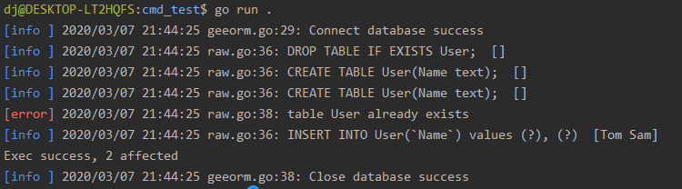

动手写ORM框架 - GeeORM第一天 database/sql 基础
7天用 Go语言/golang 从零实现 ORM 框架 GeeORM 教程(7 days implement golang object relational mapping framework from scratch tutorial)，动手写 ORM 框架，参照 gorm, xorm 的实现。介绍了 SQLite 的基础操作（连接数…
本文是7天用Go从零实现ORM框架GeeORM的第一篇。介绍了
- SQLite 的基础操作（连接数据库，创建表、增删记录等）。
- 使用 Go 语言标准库 database/sql 连接并操作 SQLite 数据库，并简单封装。代码约150行
1 初识 SQLite
SQLite is a C-language library that implements a small, fast, self-contained, high-reliability, full-featured, SQL database engine. -- SQLite 官网
SQLite 是一款轻量级的，遵守 ACID 事务原则的关系型数据库。SQLite 可以直接嵌入到代码中，不需要像 MySQL、PostgreSQL 需要启动独立的服务才能使用。SQLite 将数据存储在单一的磁盘文件中，使用起来非常方便。也非常适合初学者用来学习关系型数据的使用。GeeORM 的所有的开发和测试均基于 SQLite。
在 Ubuntu 上，安装 SQLite 只需要一行命令，无需配置即可使用。
apt-get install sqlite3
接下来，连接数据库(gee.db)，如若 gee.db 不存在，则会新建。如果连接成功，就进入到了 SQLite 的命令行模式，执行 .help 可以看到所有的帮助命令。
> sqlite3 gee.db
SQLite version 3.22.0 2018-01-22 18:45:57
Enter ".help" for usage hints.
sqlite>
使用 SQL 语句新建一张表 User，包含两个字段，字符串 Name 和 整型 Age。
sqlite> CREATE TABLE User(Name text, Age integer);
插入两条数据
sqlite> INSERT INTO User(Name, Age) VALUES ("Tom", 18), ("Jack", 25);
执行简单的查询操作，在执行之前使用 .head on 打开显示列名的开关，这样查询结果看上去更直观。
sqlite> .head on
# 查找 `Age > 20` 的记录；
sqlite> SELECT * FROM User WHERE Age > 20;
Name|Age
Jack|25
# 统计记录个数。
sqlite> SELECT COUNT(*) FROM User;
COUNT(*)
2
使用 .table 查看当前数据库中所有的表(table)，执行 .schema <table> 查看建表的 SQL 语句。
sqlite> .table
User
sqlite> .schema User
CREATE TABLE User(Name text, Age integer);
SQLite 的使用暂时介绍这么多，了解了以上使用方法已经足够我们完成今天的任务了。如果想了解更多用法，可参考 SQLite 常用命令。
2 database/sql 标准库
Go 语言提供了标准库 database/sql 用于和数据库的交互，接下来我们写一个 Demo，看一看这个库的用法。
package main
import (
"database/sql"
"log"
_ "modernc.org/sqlite"
)
func main() {
db, _ := sql.Open("sqlite", "gee.db")
defer func() { _ = db.Close() }()
_, _ = db.Exec("DROP TABLE IF EXISTS User;")
_, _ = db.Exec("CREATE TABLE User(Name text);")
result, err := db.Exec("INSERT INTO User(`Name`) values (?), (?)", "Tom", "Sam")
if err == nil {
affected, _ := result.RowsAffected()
log.Println(affected)
}
row := db.QueryRow("SELECT Name FROM User LIMIT 1")
var name string
if err := row.Scan(&name); err == nil {
log.Println(name)
}
}
本版使用纯 Go 的
modernc.org/sqlite驱动，不依赖 CGO。Windows、macOS 和 Linux 都不需要额外安装 GCC；首次运行时 Go 会按go.mod下载并校验驱动依赖。
执行 go run .，输出如下。
> go run .
2020/03/07 20:28:37 2
2020/03/07 20:28:37 Tom
- 使用
sql.Open()连接数据库，第一个参数是驱动名称，import 语句_ "modernc.org/sqlite"会注册名为sqlite的驱动；第二个参数是数据源名称，对 SQLite 来说就是数据库文件名，不存在时会创建。返回值*sql.DB是并发安全的连接池句柄，Open本身通常不会立即建立连接，真正的错误会在首次操作或Ping时暴露。 Exec()用于执行 SQL 语句，如果是查询语句，不会返回相关的记录。所以查询语句通常使用Query()和QueryRow()，前者可以返回多条记录，后者只返回一条记录。Exec()、Query()、QueryRow()接受1或多个入参，第一个入参是 SQL 语句，后面的入参是 SQL 语句中的占位符?对应的值，占位符一般用来防 SQL 注入。QueryRow()的返回值类型是*sql.Row，row.Scan()接受1或多个指针作为参数，可以获取对应列(column)的值，在这个示例中，只有Name一列，因此传入字符串指针&name即可获取到查询的结果。
掌握了基础的 SQL 语句和 Go 标准库 database/sql 的使用，可以开始实现 ORM 框架的雏形了。
3 实现一个简单的 log 库
开发一个框架/库并不容易，详细的日志能够帮助我们快速地定位问题。因此，在写核心代码之前，我们先用几十行代码实现一个简单的 log 库。
为什么不直接使用原生的 log 库呢？log 标准库没有日志分级，不打印文件和行号，这就意味着我们很难快速知道是哪个地方发生了错误。
这个简易的 log 库具备以下特性：
- 支持日志分级（Info、Error、Disabled 三级）。
- 不同层级日志显示时使用不同的颜色区分。
- 显示打印日志代码对应的文件名和行号。
go mod init geeorm
首先创建一个名为 geeorm 的 module，并新建文件 log/log.go，用于放置和日志相关的代码。GeeORM 现在长这个样子：
day1-database-sql/
|--log/
|--log.go
|--go.mod
第一步，创建 2 个日志实例分别用于打印 Info 和 Error 日志。
package log
import (
"io"
"log"
"os"
"sync"
)
var (
errorLog = log.New(os.Stdout, "\033[31m[error]\033[0m ", log.LstdFlags|log.Lshortfile)
infoLog = log.New(os.Stdout, "\033[34m[info ]\033[0m ", log.LstdFlags|log.Lshortfile)
loggers = []*log.Logger{errorLog, infoLog}
mu sync.Mutex
)
// log methods
var (
Error = errorLog.Println
Errorf = errorLog.Printf
Info = infoLog.Println
Infof = infoLog.Printf
)
[info ]颜色为蓝色，[error]为红色。- 使用
log.Lshortfile支持显示文件名和代码行号。 - 暴露
Error，Errorf，Info，Infof4个方法。
第二步呢，支持设置日志的层级(InfoLevel, ErrorLevel, Disabled)。
// log levels
const (
InfoLevel = iota
ErrorLevel
Disabled
)
// SetLevel controls log level
func SetLevel(level int) {
mu.Lock()
defer mu.Unlock()
for _, logger := range loggers {
logger.SetOutput(os.Stdout)
}
if ErrorLevel < level {
errorLog.SetOutput(io.Discard)
}
if InfoLevel < level {
infoLog.SetOutput(io.Discard)
}
}
- 这一部分的实现非常简单，三个层级声明为三个常量，通过控制
Output，来控制日志是否打印。 - 如果设置为 ErrorLevel，infoLog 的输出会被定向到
io.Discard，即不打印该日志。
至此呢，一个简单的支持分级的 log 库就实现完成了。
4 核心结构 Session
我们在根目录下新建一个文件夹 session，用于实现与数据库的交互。今天我们只实现直接调用 SQL 语句进行原生交互的部分，这部分代码实现在 session/raw.go 中。
day1-database-sql/session/raw.go
package session
import (
"database/sql"
"geeorm/log"
"strings"
)
type Session struct {
db *sql.DB
sql strings.Builder
sqlVars []any
}
func New(db *sql.DB) *Session {
return &Session{db: db}
}
func (s *Session) Clear() {
s.sql.Reset()
s.sqlVars = nil
}
func (s *Session) DB() *sql.DB {
return s.db
}
func (s *Session) Raw(sql string, values ...any) *Session {
s.sql.WriteString(sql)
s.sql.WriteString(" ")
s.sqlVars = append(s.sqlVars, values...)
return s
}
- Session 结构体目前只包含三个成员变量，第一个是
db *sql.DB，即使用sql.Open()方法连接数据库成功之后返回的指针。 - 第二个和第三个成员变量用来拼接 SQL 语句和 SQL 语句中占位符的对应值。用户调用
Raw()方法即可改变这两个变量的值。
接下来呢，封装 Exec()、Query() 和 QueryRow() 三个原生方法。
// Exec raw sql with sqlVars
func (s *Session) Exec() (result sql.Result, err error) {
defer s.Clear()
log.Info(s.sql.String(), s.sqlVars)
if result, err = s.DB().Exec(s.sql.String(), s.sqlVars...); err != nil {
log.Error(err)
}
return
}
// QueryRow gets a record from db
func (s *Session) QueryRow() *sql.Row {
defer s.Clear()
log.Info(s.sql.String(), s.sqlVars)
return s.DB().QueryRow(s.sql.String(), s.sqlVars...)
}
// QueryRows gets a list of records from db
func (s *Session) QueryRows() (rows *sql.Rows, err error) {
defer s.Clear()
log.Info(s.sql.String(), s.sqlVars)
if rows, err = s.DB().Query(s.sql.String(), s.sqlVars...); err != nil {
log.Error(err)
}
return
}
- 封装有 2 个目的，一是统一打印日志（包括 执行的SQL 语句和错误日志）。
- 二是执行完成后，清空
(s *Session).sql和(s *Session).sqlVars两个变量。这样 Session 可以复用，开启一次会话，可以执行多次 SQL。
5 核心结构 Engine
Session 负责与数据库的交互，那交互前的准备工作（比如连接/测试数据库），交互后的收尾工作（关闭连接）等就交给 Engine 来负责了。Engine 是 GeeORM 与用户交互的入口。代码位于根目录的 geeorm.go。
package geeorm
import (
"database/sql"
"geeorm/log"
"geeorm/session"
)
type Engine struct {
db *sql.DB
}
func NewEngine(driver, source string) (e *Engine, err error) {
db, err := sql.Open(driver, source)
if err != nil {
log.Error(err)
return
}
// Send a ping to make sure the database connection is alive.
if err = db.Ping(); err != nil {
log.Error(err)
return
}
e = &Engine{db: db}
log.Info("Connect database success")
return
}
func (engine *Engine) Close() {
if err := engine.db.Close(); err != nil {
log.Error("Failed to close database")
}
log.Info("Close database success")
}
func (engine *Engine) NewSession() *session.Session {
return session.New(engine.db)
}
Engine 的逻辑非常简单，最重要的方法是 NewEngine，NewEngine 主要做了两件事。
- 连接数据库，返回
*sql.DB。 - 调用
db.Ping()，检查数据库是否能够正常连接。
另外呢，提供了 Engine 提供了 NewSession() 方法，这样可以通过 Engine 实例创建会话，进而与数据库进行交互了。到这一步，整个 GeeORM 的框架雏形已经出来了。
day1-database-sql/
|--log/ # 日志
|--log.go
|--session/ # 数据库交互
|--raw.go
|--geeorm.go # 用户交互
|--go.mod
6 测试
GeeORM 的单元测试是比较完备的，可以参考 log_test.go、raw_test.go 和 geeorm_test.go 等几个测试文件，在这里呢，就不一一讲解了。接下来呢，我们将 geeorm 视为第三方库来使用。
在根目录下新建 cmd_test 目录放置测试代码，新建文件 main.go。
day1-database-sql/cmd_test/main.go
package main
import (
"geeorm"
"geeorm/log"
_ "modernc.org/sqlite"
)
func main() {
engine, _ := geeorm.NewEngine("sqlite", "gee.db")
defer engine.Close()
s := engine.NewSession()
_, _ = s.Raw("DROP TABLE IF EXISTS User;").Exec()
_, _ = s.Raw("CREATE TABLE User(Name text);").Exec()
_, _ = s.Raw("CREATE TABLE User(Name text);").Exec()
result, _ := s.Raw("INSERT INTO User(`Name`) values (?), (?)", "Tom", "Sam").Exec()
count, _ := result.RowsAffected()
fmt.Printf("Exec success, %d affected\n", count)
}
执行 go run main.go，将会看到如下的输出：

日志中出现了一行报错信息，table User already exists，因为我们在 main 函数中执行了两次创建表 User 的语句。可以看到，每一行日志均标明了报错的文件和行号，而且不同层级日志的颜色是不同的。
附 推荐阅读
白话复盘：先看清 database/sql 的职责边界
*sql.DB 不是一条固定连接
它更像数据库访问入口和连接池管理器。sql.Open 主要校验驱动名称并保存连接信息，通常不会立刻建立真实连接；需要尽早确认数据库可用时，应调用 Ping。多个 goroutine 可以共享一个 *sql.DB，而不是每次操作都重新打开。
GeeORM 的 Engine 在这一层包住 *sql.DB 和方言，Session 则代表一次逐步构造并执行 SQL 的工作区。这样后续新增反射和链式 API 时，底层仍然回到标准库的 Exec、Query 与事务能力。
执行与查询要分清
Exec用于不返回结果集的语句，例如 CREATE、INSERT、UPDATE、DELETE；结果中可以读取受影响行数等信息。Query返回*sql.Rows，调用者必须逐行Next、Scan，并及时Close。- 只查一行时可以使用
QueryRow，但错误往往到Scan时才暴露。
所有外部数据都应通过占位符作为参数传入，不要用字符串拼接用户输入。参数化不仅防 SQL 注入，也让驱动正确处理引号和二进制值。不同数据库的占位符风格可能不同，这正是方言层需要考虑的一部分。
当前 SQLite 驱动说明
升级后的教程使用纯 Go 的 modernc.org/sqlite，不依赖本机 C 编译器。驱动名和 DSN 必须与驱动文档一致；换成 MySQL 或 PostgreSQL 时，不只是改 import，还要考虑数据类型、占位符和建表语法差异。
容易踩坑
- 忘记关闭
Rows可能长期占用连接，甚至让后续写操作等待；读取完也要检查rows.Err()。 DB.Close应在整个应用结束时调用，而不是每条 SQL 后调用。- 内存 SQLite 数据库与连接数有关，多连接测试可能看见不同数据库；测试应使用明确 DSN 或临时文件并控制连接策略。
- 日志应记录 SQL 模板和必要上下文，但生产环境不要泄露密码或敏感参数。
动手检查
先执行建表和插入，再用 Query 逐行读取；故意不调用 Scan 与故意写错 SQL，观察错误分别在哪一步出现。理解错误出现时机，是后续封装 ORM 时不吞错的基础。